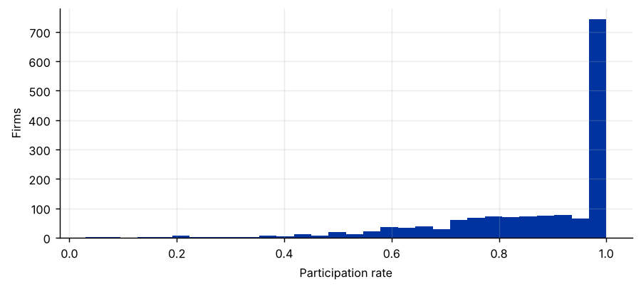
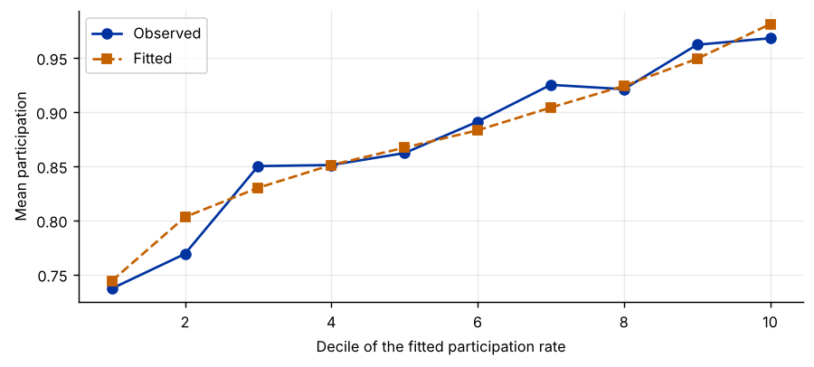

Run this model on your own data in Open Econometric Systems →
Step 1The question and the model
How does the employer match raise the share of eligible employees who take up a 401(k) plan? The outcome prate is the proportion of eligible employees who participate, between 0 and 1. In the fractional-response model
the mean is a logistic function of a linear index, so predictions stay in (0, 1) and the effect of a variable shrinks near the bounds. The model is estimated by the Bernoulli quasi-likelihood, which gives consistent estimates for any distribution of \(y\) on [0, 1], including a large mass at 1, as long as the mean is right; the standard errors are made robust to the unknown variance.
| Variable in the file | Definition |
|---|---|
prate |
participation rate: share of eligible employees with an account |
mrate |
employer match per dollar of employee contribution |
ltotemp |
log of the number of employees |
age |
age of the plan in years |
sole |
1 if the 401(k) is the only pension plan offered |
Before you estimate anything
- Is the outcome a proportion, with or without exact 0s and 1s? Fractional logit allows both. A Beta regression does not allow the boundary values.
- Is the mean function the target? The model is about the expected share; it says nothing about the distribution unless you add assumptions.
- Are the observations the unit you want to weight? Each firm counts once here. If you want the share of employees, weight by firm size.
How to write it: model section
The participation rate is a proportion with 44% of firms at exactly 1, so we model its conditional mean with a logistic function and estimate it by quasi-maximum likelihood (a generalized linear model with the binomial family and logit link; Papke and Wooldridge, 1996). Standard errors are robust to heteroskedasticity. We report average marginal effects on the participation rate and compare the logit link with the probit and complementary log-log alternatives.
Step 2Load the data and look at the bounded outcome
import warnings; warnings.filterwarnings("ignore")
import numpy as np, pandas as pd
import matplotlib.pyplot as plt
import statsmodels.api as sm
from scipy import stats
d = pd.read_csv("pension_participation.csv")
y = d.prate
print(f"{len(d)} firms; mean participation {y.mean():.3f}; {(y == 1).mean():.1%} of firms have 100% participation; minimum {y.min():.2f}")
print("\nMean participation by quartile of the match rate")
print(d.groupby(pd.qcut(d.mrate, 4, labels=["Q1 (lowest)", "Q2", "Q3", "Q4 (highest)"])).prate.mean().round(3).to_string())
fig, ax = plt.subplots(figsize=(7, 3.2))
ax.hist(y, bins=30, color="#0033a0"); ax.set_xlabel("Participation rate"); ax.set_ylabel("Firms")
plt.tight_layout()1534 firms; mean participation 0.874; 44.5% of firms have 100% participation; minimum 0.03 Mean participation by quartile of the match rate mrate Q1 (lowest) 0.804 Q2 0.843 Q3 0.895 Q4 (highest) 0.955

How to read it
Participation is high (mean 0.87), piled up at 1 (44% of firms), and rises with the match rate: from 0.80 in the lowest quartile to 0.96 in the highest. A distribution like this, bounded and with a spike at the upper bound, is not described well by a normal linear model.
Step 3Step 1: OLS and what is wrong with it
xs = ["mrate", "ltotemp", "age", "sole"]
X = sm.add_constant(d[xs])
ols = sm.OLS(y, X).fit(cov_type="HC0")
print(pd.DataFrame({"coef": ols.params, "robust s.e.": ols.bse}).round(4).to_string())
print(f"\nOLS predicts a participation rate above 1 for {(ols.fittedvalues > 1).sum()} firms")coef robust s.e. const 0.9465 0.0218 mrate 0.0485 0.0043 ltotemp -0.0240 0.0032 age 0.0032 0.0004 sole 0.0217 0.0087 OLS predicts a participation rate above 1 for 63 firms
How to read it
OLS says a dollar more of match raises participation by 4.9 percentage points on average. It predicts a rate above 100% for 63 firms, and a constant slope cannot be right for a variable that cannot exceed one: firms near the ceiling have little room to respond. The fractional-logit model builds this into the mean function.
Step 4Step 2: Fractional logit
logit = sm.GLM(y, X, family=sm.families.Binomial()).fit(cov_type="HC0")
print(pd.DataFrame({"coef": logit.params, "robust s.e.": logit.bse, "z": logit.tvalues}).round(4).to_string())
def ame(res, link):
A = X.to_numpy(float); b = res.params.to_numpy(); out = {}
for i, c in enumerate(xs):
if set(d[c].unique()) <= {0, 1}:
A1, A0 = A.copy(), A.copy(); A1[:, i + 1], A0[:, i + 1] = 1, 0
out[c] = (link.inverse(A1 @ b) - link.inverse(A0 @ b)).mean()
else:
h = 1e-5; A1, A0 = A.copy(), A.copy(); A1[:, i + 1] += h; A0[:, i + 1] -= h
out[c] = ((link.inverse(A1 @ b) - link.inverse(A0 @ b)) / (2 * h)).mean()
return pd.Series(out)
am = ame(logit, sm.families.links.Logit())
print("\nAverage marginal effect on the participation rate")
print(pd.DataFrame({"fractional logit": am, "OLS": ols.params[1:]}).round(4).to_string()) coef robust s.e. z
const 2.3705 0.1921 12.3395
mrate 0.9167 0.1341 6.8373
ltotemp -0.2080 0.0258 -8.0568
age 0.0322 0.0050 6.5065
sole 0.1677 0.0846 1.9809
Average marginal effect on the participation rate
fractional logit OLS
mrate 0.0969 0.0485
ltotemp -0.0220 -0.0240
age 0.0034 0.0032
sole 0.0176 0.0217How to read it
The coefficients are on the logit scale: a higher match, an older plan and the sole-plan indicator raise participation, and a larger firm lowers it. The marginal effect of the match rate is 0.097, twice the OLS slope: a dollar of match raises participation by about 9.7 points on average, and the effect of one more log point of firm size is −2.2 points. The OLS slope is smaller because it averages over the whole range, including firms near the ceiling where the logistic curve is flat.
How to write it: main result
A one-dollar higher employer match raises the participation rate by 9.7 percentage points (average marginal effect, robust standard error 1.4), about twice the OLS estimate of 4.9 points. Larger firms have lower participation (−2.2 points per log point of employment), and plans that have existed longer have higher participation (0.34 points per year).
Step 5Step 3: Does the choice of link matter?
links = {"logit": sm.families.links.Logit(), "probit": sm.families.links.Probit(), "cloglog": sm.families.links.CLogLog()}
rows = []
for nm, lk in links.items():
m = sm.GLM(y, X, family=sm.families.Binomial(link=lk)).fit(cov_type="HC0")
A = X.to_numpy(float); eta = A @ m.params.to_numpy()
aux = sm.GLM(y, np.column_stack([A, eta ** 2]), family=sm.families.Binomial(link=lk)).fit(cov_type="HC0")
rows.append([nm, ame(m, lk)["mrate"], np.corrcoef(y, m.mu)[0, 1] ** 2, float(((y - m.mu) ** 2).sum()), aux.tvalues[-1]])
print(pd.DataFrame(rows, columns=["link", "AME of mrate", "R2 (corr^2)", "sum sq. resid.", "link-test t"]).set_index("link").round(4).to_string())
print(f"OLS: AME {ols.params['mrate']:.4f}, R2 {np.corrcoef(y, ols.fittedvalues)[0, 1] ** 2:.4f}")AME of mrate R2 (corr^2) sum sq. resid. link-test t link logit 0.0969 0.1817 35.0665 -4.3283 probit 0.0793 0.1749 35.3671 -4.2087 cloglog 0.0644 0.1675 35.6930 -3.7781 OLS: AME 0.0485, R2 0.1474
How to read it
The three links agree on the sign and significance but not exactly on the size of the marginal effect of the match rate (0.097 for the logit, 0.079 for the probit, 0.064 for the complementary log-log), and the logit has the best fit by both the squared correlation (0.182) and the sum of squared residuals (35.07). The OLS squared correlation is lower (0.147). All three link tests reject, with t statistics from −3.8 to −4.3, which says that the index is not fully captured by a linear combination of these four variables and a single link (for example, the effect of the match probably differs by firm size). The link choice is not what drives the result; the specification of the index is the issue to investigate.
Step 6Step 4: Fit by decile and the variance question
mu = logit.mu
q = pd.qcut(pd.Series(mu).rank(method="first"), 10, labels=False)
comp = pd.DataFrame({"observed": y.groupby(q.values).mean(), "fitted": pd.Series(mu).groupby(q.values).mean()}).round(3)
print(comp.T.to_string())
fig, ax = plt.subplots(figsize=(7, 3.2))
ax.plot(comp.index + 1, comp.observed, "o-", label="Observed"); ax.plot(comp.index + 1, comp.fitted, "s--", label="Fitted")
ax.set_xlabel("Decile of the fitted participation rate"); ax.set_ylabel("Mean participation"); ax.legend(); plt.tight_layout()
pear = ((y - mu) ** 2 / (mu * (1 - mu))).sum() / (len(y) - 5)
print(f"\nPearson chi-squared / df = {pear:.3f} (the Bernoulli variance would give 1; the data are far less dispersed than a Bernoulli)")0 1 2 3 4 5 6 7 8 9 observed 0.737 0.769 0.85 0.851 0.862 0.891 0.925 0.921 0.962 0.968 fitted 0.744 0.803 0.83 0.851 0.867 0.883 0.904 0.924 0.949 0.981 Pearson chi-squared / df = 0.241 (the Bernoulli variance would give 1; the data are far less dispersed than a Bernoulli)

How to read it
The fitted means follow the observed means closely across deciles. The Pearson ratio is about 0.24, far below 1, because a share is much less variable than a single yes/no outcome. This is why the robust (sandwich) standard errors matter: the model-based Bernoulli standard errors would be too large by a factor of about two, and the robust ones are valid whatever the true variance.
Step 7What to report in the paper
Report the share at the bounds; the family and link and why; coefficients with robust standard errors; average marginal effects on the mean; the comparison with OLS and with other links; and the fit by decile. If the outcome is a share of a total, say what the weights are.
How to write it: results and robustness
Table 2 reports the fractional-logit estimates. The sign and significance of the match rate are the same with probit and complementary log-log links, although the marginal effect is smaller (0.079 and 0.064 against 0.097), and the logit link fits best. The link test rejects a single-index specification for all three links, so the point estimates should be read as an approximation to the average effect, and a richer index (for example an interaction between the match and firm size) is a natural extension.
Step 8Common mistakes
Mistakes to avoid
- Using OLS on a share and reading the slope as constant. It ignores the bounds and predicts impossible values.
- Using log(y/(1-y)) with OLS. It fails when y is exactly 0 or 1, and the transformed mean is not the mean of the share.
- Reading the logit coefficient as a percentage-point effect. Use the average marginal effect.
- Model-based standard errors. For a quasi-likelihood use robust standard errors.
- Treating a mass at the bound as a censoring problem. The values at 1 are real values here, not censored (use Tobit for a censored outcome).
- Forgetting the weights. A firm-level rate and an employee-level rate are different targets.
- For positive skewed amounts, using a log transform in OLS. Use a GLM with a gamma family and log link, which gives the effect on the mean without retransformation bias.